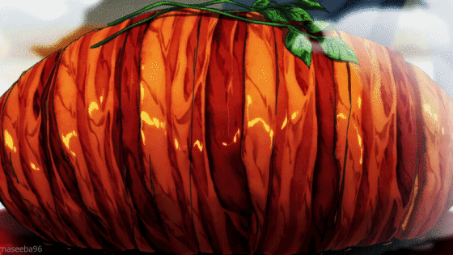

Gotcha Roast Pork

Description
This is Sōma's innovative dish which is served to repel the vicious urban
residential planner, Yaeko Minegasaki from destroying Restaurant Yukihira.
Even when after all the meat materials were sabotaged in his kitchen, Sōma
managed to turn the tides by using some of the groceries as his
ingredients to create artificial meat.
Ingredients
- 6 white potatoes.
- 3 Eringi mushrooms
- 1 large white onion, or 2 medium white onions.
- 1 sprig of rosemary.
-
Butter. I suggest 2 tablespoons (30ml), but you could always used a bit
more.
- 2 packs of thick-cut bacon.
-
1 cup, or 250ml of red wine. We used a Pinot Noir since its preferable
for cooking.
-
1/4 cup, or 60ml of sake. Any sake that is labeled as “sweet” should do.
- 2 tbs, or 30ml of soy sauce.
- 1 spring of parsley or any garnish.
Steps
- Peel the Potatoes
- Slice the Potatoes
-
Wash the potatoes then cut them into quarters or halves, depending on
size.
-
Chop the Mushrooms and Onions into Equally-sized Brunoise (small 5-6cm
cubes)
- Steam the Potatoes
- Steam potatoes until soft (about 15-20 minutes).
- DO NOT steam or microwave the mushrooms.
- Pan Fry the Onions and Mushrooms
- Prep the pan with a tablespoon of butter.
- Pan fry onions and mushrooms until caramelized or fully golden.
- Mash the Potatoes
-
Mash into small chunks in a large bowl. Do not mash too much, you want
to avoid it being frothy to form it to shape.
- Combine the Onion and Mushroom Mix with the Potato Mash
- Pick the Rosemary off its stem
- Add a few sprinkles of salt to the top of the bowl.
- Form the Fake Roast
-
Let the mix cool until touchable (more than 5 minutes). CAUTION HOT
-Take all of the mix and form it into a log shape.
- Wrap the Roast in Bacon
- Amount: 2 packs of thick-cut bacon.
-
Wrap the roast fully, try not to leave any gaps, otherwise, the
potatoes will seep out when the bacon tightens.
-
There is no surefire way of doing this, just coat it to the best of
your ability.
- Tie the Roast
-
Tie the roast with the twine. It doesn’t need to be anything fancy,
just wrap it around a few times.
- Intertwine the rosemary afterward.
-
Bake at 375ºF or 190ºC for 30-45 minutes or until bacon is golden (cook
longer for crispy bacon), turning halfway
- Add the Butter, Sake, and Soy Sauce to the Wine
- Amount: 1 tbs of butter, 1/4 cup of sake, 2 tbs of soy sauce.
- Melt the butter into the boiling wine.
-
Pour the soy sauce and sake into the sauce. -Continue to cook for 2-3
minutes.
- Melt the butter into the boiling wine.
-
Pour the finished sauce onto the roast (make sure the roast is on a
plate to hold the extra sauce). Pour slowly.
-
Pour the finished sauce onto the roast (make sure the roast is on a
plate to hold the extra sauce). Pour slowly.
- Serve
Back to recipes page